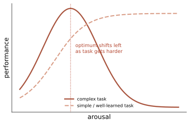

个体 II · 动机与情绪
动机回答"为什么开始与坚持"，情绪回答"发生了什么、该怎么应对"。两者共用一套生理与评价机制，所以合并一页。本页的实用密度很高：自我决定理论与情绪调节策略是本站少数可以直接改变日常做法的内容。
1. 动机理论谱系
本能与驱力：驱力减少理论（饿 → 吃 → 平衡恢复）解释稳态需求，但解释不了为什么会主动寻求刺激（好奇、极限运动）⇒ 唤醒理论补上：人追求最优唤醒水平。
Yerkes–Dodson 定律【摇：作为定性规律稳，作为精确曲线弱】：

马斯洛需求层次【摇→倒（作为科学理论）】：金字塔在管理培训中无处不在，但严格的层级次序缺乏实证支持（人可以在饥饿中追求意义、在安全缺失时追求归属）；当代替代是自我决定理论（SDT）。
【稳】自我决定理论（Deci & Ryan）——本页最实用的框架：内在动机由三种基本心理需求供养：
| 需求 | 含义 | 被削弱时 |
|---|---|---|
| 自主 | 行为出于自己的选择 | 被控制感 ⇒ 内在动机崩塌 |
| 胜任 | 有效地应对挑战 | 挫败/无聊 ⇒ 退出 |
| 联结 | 与他人的关系 | 孤立 ⇒ 意义流失 |
动机的连续谱（外部调节 → 内摄 → 认同 → 整合 → 内在），而非"内在 vs 外在"二分。实用推论：奖励若被体验为控制则伤害内在动机（第 08 页的过度理由效应），若被体验为信息反馈（承认胜任）则无害；给选择权、给可见进步、给同伴联结是提升坚持度的三个杠杆——用在自学、健身、团队管理上都成立。
成就动机与目标：掌握目标 vs 表现目标（前者关联更持久的投入）；【稳】具体且有挑战的目标优于"尽力而为"（Locke & Latham 的目标设定理论是组织心理学中复现最好的结论之一）；【摇】 成长型思维（第 03 页：真实但小）。
2. 情绪：三个成分与四种理论
成分：生理唤醒 + 表达行为 + 主观体验 + 认知评价。
理论演进（各自都对一部分）：James–Lange（先有身体反应，情绪是对它的觉知）→ Cannon–Bard（丘脑同时发送）→ Schachter–Singer 二因素（唤醒 + 认知标签）→ 当代评价理论（Lazarus：评价决定情绪种类——同一心跳加速，评价为"危险"是恐惧、"机会"是兴奋）。
【摇】吊桥实验（唤醒错误归因为吸引）——概念影响巨大，但原始研究样本小、后续复现不一，当作"生动的示范"而非定论。
情绪的普遍性之争【争】：Ekman 的基本情绪与跨文化面部表情识别曾是教科书定论；Barrett 的建构情绪理论提出情绪范畴是文化与概念建构的，且大规模审查（2019）指出从面部表情推断情绪状态的可靠性远低于假设——这对"AI 情绪识别"产品是直接的科学质疑（🔗 第 20 页）。当前状态：面部表情与情绪有统计关联但远非一一对应，"读脸识情绪"的商业宣称超出证据。
神经基础：杏仁核的快速威胁通路（LeDoux 的"低路"）、脑岛与内感受、前额叶的调节；【摇】"杏仁核 = 恐惧中枢"是简化——它对显著性与不确定性广泛响应（第 05 页反向推理谬误）。
3. 情绪调节（可迁移的操作）
Gross 的过程模型按时间给出五个介入点：情境选择 → 情境修正 → 注意分配 → 认知重评 → 反应调节。证据：
- 【稳】认知重评优于表达抑制：重评（改变对事件的解读）关联更好的情绪结果与社交效果；抑制（面上不动、心里翻涌）增加生理负荷、损害记忆与关系；
- 【稳】情绪标注（affect labeling）："把它说出来/写下来"降低杏仁核反应——表达性写作在多项研究中对创伤后调适有小到中等效应；
- 【摇】发泄理论（打枕头能消气）：证据反向——攻击性发泄倾向于维持或增强愤怒【倒】；
- 【稳】正念训练对焦虑抑郁有小到中等效应（\(d \approx 0.3\) 量级），显著低于媒体宣传，且积极对照组研究少（第 17/18 页）。
4. 具体动机的两块
饥饿与体重：下丘脑 + 瘦素/胃饥饿素 + 设定点/沉降点理论；【稳】 节食后代谢适应与体重反弹极为常见——"意志力不够"的道德化解释在生理面前站不住；饮食失调（第 16 页）。
性动机与性取向：生物（激素、产前环境）× 社会文化；【稳】性取向不是可由干预改变的选择——转化治疗被主流专业组织认定为无效且有害。
5. 反直觉清单
- 微笑会让你更快乐吗：【倒】 面部反馈假说的强版本在 17 实验室复现中失败（Wagenmakers 等 2016）；后续更大规模研究显示极小效应——"假笑变快乐"不成立；
- 金钱与幸福：Kahneman–Deaton（2010）曾报告情绪幸福在约 7.5 万美元后饱和；Killingsworth（2021）与二人 2023 年的对抗性合作修正为——对多数人幸福随收入持续上升（对数关系），但对最不快乐的少数群体存在平台。这是"两位诺奖级学者公开合作检验彼此矛盾结论"的方法论典范（🔗 第 03 页的改革精神）；
- 情绪不是理性的敌人：躯体标记假说（Damasio）与前额叶损伤病人的决策灾难说明——没有情绪的纯理性决策者在现实中无法做出选择。
下一页：把这些差异稳定下来的东西——人格：理论、测量，以及为什么 MBTI 不该被用来做决定。